OCI의 Private한 네트워크 환경을 허가된 외부 사용자가 접근하는 방법의 하나로 VPN을 사용하게 되며, IPSec 기반 VPN과 SSL 기반 VPN 등이 있습니다. 여기에서는 OpenVPN을 통해 OCI와 클라이언트 사이에 SSL 기반 VPN을 연결하는 과정을 알아보고자 합니다.
OCI와 OpenVPN 클라이언트간의 SSL VPN을 구성하기 위해서는 크게 세단계를 거치게 됩니다.
- OCI 환경 구성
- OCI에 OpenVPN 서버 설치 및 구성
- 클라이언트에 OpenVPN 클라이언트 설치
OpenVPN을 통한 접속 흐름
클라이언트 PC가 Public Subnet에 설치된 OpenVPN을 통해서 Private Subnet 안의 서버를 SSL 기반 VPN을 통해 연결하게 됩니다.
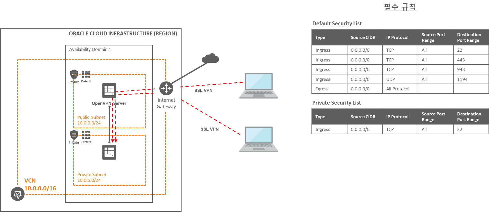
Step 1. OCI 환경 구성
VCN 만들기
OCI 콘솔에서 내비게이션 메뉴를 엽니다. [Core Infrastructure] >> [Networking] >> [Virtual Cloud Networks] 항목으로 이동합니다.
[Create Virtual Cloud Network] 클릭
생성 정보 입력
- CREATE IN COMPARTMENT: “Sandbox” Compartment 선택
- Name: “ConnectivityVCN” 입력
- CREATE VIRTUAL CLOUD NETWORKS PLUS RELATED RESOURCES 선택
다이얼로 최하단으로 스크롤 하여 [Create Virtual Cloud Network] 클릭합니다.
다이얼로그에서 확인할 수 있지만, 아래 자원들과 추가적인 자원들이 생성됩니다.
- Virtual Cloud Network
- CIDR block range : 10.0.0.0/16
- Internet Gateway
- Default Route Table 모든 트래픽은 생성된 Internet Gateway를 통함
- Subnet Availability Domain 당 하나의 Subnet이 생성되며 각 Subnet은 VCN의 IP Range를 나누어 가집니다. 모두 Public Subnet입니다.
- Default Security List
- Virtual Cloud Network
Private Subnet 만들기
Private Subnet을 위한 Security List를 만듭니다.
- SECURITY LIST NAME: 이름 입력, Private Security List
- Allow Rules for Ingress: 테스트를 위해 Public Subnet에서 SSH로 접속할 수 있도록 아래 그림처럼 설정
- Allow Rules for Egress: 없음
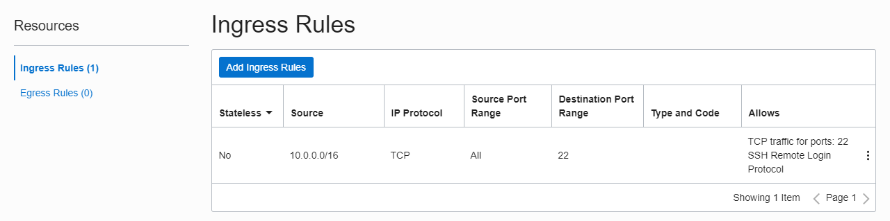
Private Subnet을 위한 Routing Table을 만듭니다.
- Name: 이름 입력, Private Route Table
- Route Rules: 없음
VPN을 거쳐 연결될 Private Subnet을 하나 만듭니다.
- Name: 이름 입력, Private Regional Subnet
- Subnet Type: Compute 서비스는 두 형태 모두 지원합니다. REGIONAL을 선택
- REGIONAL: Region에 글로벌하게 있는 서브넷
- AVAILIBILTY DOMAIN-SPECIFIC: AD내에 만들어지는 서브넷
- CIDR Block: 10.0.5.0/24
- Route Table: 앞서 생성한 Private Route Table 선택
- Subnet Access: Private Subnet 선택
- DNS Resolution: 기본값 선택, “Use DNS Hostnames in this Subnet”
- DHCP Options: Default DHCP Options 선택
- Security Lists: 앞서 생성한 Private Security List 선택
Private Subnet에 인스턴스 만들기
앞서 구성한 Private Subnet에 Linux Compute 인스턴스를 하나 생성합니다. 생성후 인스턴스의 Private IP를 확인합니다.
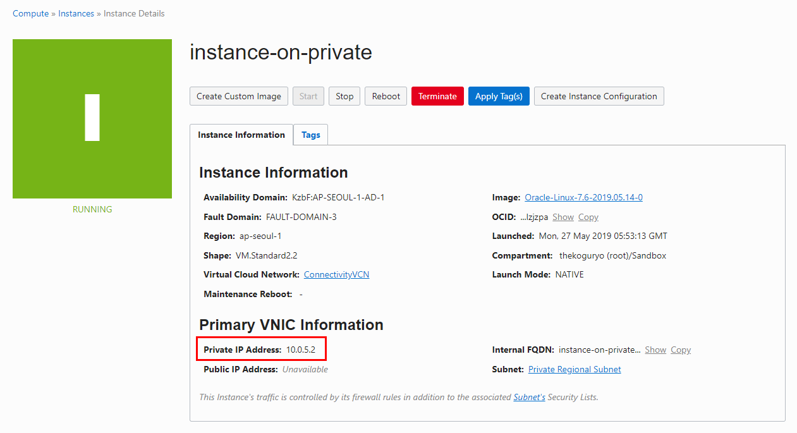
Public Subnet 설정
클라이언트에서 OpenVPN으로 접근할 수 있도록 생성된 Public Subnet의 Security List를 업데이트합니다.
생성된 VCN에서 Resources >> Securit Lists 선택하여 Default Security List를 클릭합니다.
Ingress Rules로 다음을 추가합니다.
- TCP Port 22: SSH
- TCP Port 443: OpenVPN TCP connection
- TCP Port 943: OpenVPN Web-UI
- UDP Port 1194: OpenVPN UDP Port
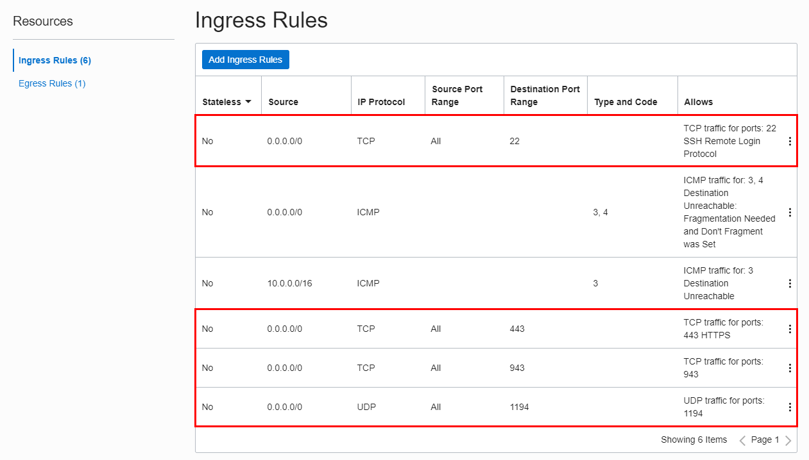
Step 2. OCI에 OpenVPN 서버 설치 및 구성
OpenVPN 서버 설치
앞서 구성한 Public Subnet에 Linux Compute 인스턴스를 하나 생성합니다.
- Name: 이름 입력, 예를 들어 “openvpn-server”
- Operating system: 디폴트 선택, Oracle Linux 7.x.
- Subnet: 앞서 만들어진 Public Subnet
생성된 Compute 인스턴스에 SSH로 접속합니다.
OpenVPN 설치를 위한 명령을 순서대로 실행합니다.
설치 파일 다운로드
wget https://swupdate.openvpn.org/as/openvpn-as-2.7.4-CentOS7.x86_64.rpm설치 패키지 인스톨
sudo rpm -ivh openvpn-as-2.7.4-CentOS7.x86_64.rpm패스워드 변경
sudo passwd openvpn설치 예시
[opc@openvpn-server ~]$ wget https://swupdate.openvpn.org/as/openvpn-as-2.7.4-CentOS7.x86_64.rpm
--2019-05-27 06:09:24-- https://swupdate.openvpn.org/as/openvpn-as-2.7.4-CentOS7.x86_64.rpm
Resolving swupdate.openvpn.org (swupdate.openvpn.org)... 104.16.183.48, 104.16.184.48
Connecting to swupdate.openvpn.org (swupdate.openvpn.org)|104.16.183.48|:443... connected.
HTTP request sent, awaiting response... 200 OK
Length: 46821384 (45M) [application/x-www-form-urlencoded]
Saving to: ‘openvpn-as-2.7.4-CentOS7.x86_64.rpm’
100%[=====================================================================================================>] 46,821,384 162MB/s in 0.3s
2019-05-27 06:09:24 (162 MB/s) - ‘openvpn-as-2.7.4-CentOS7.x86_64.rpm’ saved [46821384/46821384]
[opc@openvpn-server ~]$ sudo rpm -ivh openvpn-as-2.7.4-CentOS7.x86_64.rpm
Preparing... ################################# [100%]
Updating / installing...
1:openvpn-as-0:2.7.4_777bcfe6-CentO################################# [100%]
The Access Server has been successfully installed in /usr/local/openvpn_as
Configuration log file has been written to /usr/local/openvpn_as/init.log
Please enter "passwd openvpn" to set the initial
administrative password, then login as "openvpn" to continue
configuration here: https://10.0.0.2:943/admin
To reconfigure manually, use the /usr/local/openvpn_as/bin/ovpn-init tool.
+++++++++++++++++++++++++++++++++++++++++++++++
Access Server Web UIs are available here:
Admin UI: https://10.0.0.2:943/admin
Client UI: https://10.0.0.2:943/
+++++++++++++++++++++++++++++++++++++++++++++++
Beginning with OpenVPN AS 2.6.0 compression is disabled by default and on upgrades as security patch.
[opc@openvpn-server ~]$ sudo passwd openvpn
Changing password for user openvpn.
New password:
Retype new password:
passwd: all authentication tokens updated successfully.
[opc@openvpn-server ~]$OpenVPN 서버 구성
관리용 Web-UI 접속
- http://{OpenVPN 서버 Public IP}:943/admin
- Username: openvpn
- Password: 앞서 변경한 패스워드
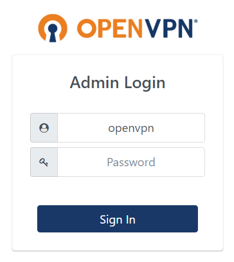
- http://{OpenVPN 서버 Public IP}:943/admin
IP Address 변경
Configuration >> Network Settings로 이동하여 Hostname or IP address 값을 OpenVPN이 설치된 서버의 Public IP를 입력합니다.
- 이때 입력한 값이 이후 OpenVPN Client의 접속 주소로 설정됩니다.
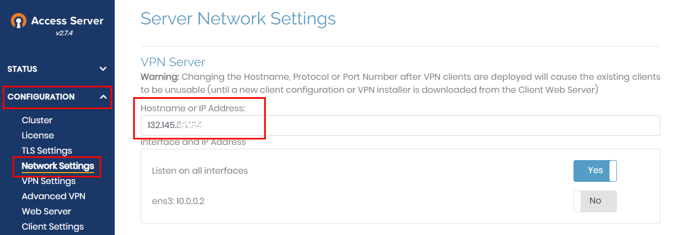
- 이때 입력한 값이 이후 OpenVPN Client의 접속 주소로 설정됩니다.
값 변경후 해당 페이지 아래쪽 Save Settings를 클릭하여 저장합니다.
VPN 설정
- Configuration >> VPN Settings로 이동하여 Routing 영역에 접속할 Private Subnet의 Private IP 범위를 입력합니다.
Should client Internet traffic be routed through the VPN?: Yes로 선택
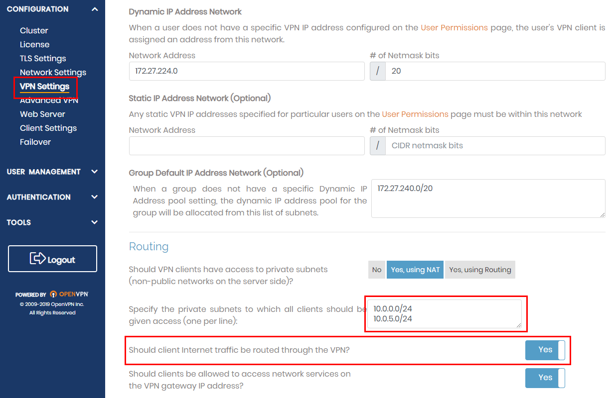값 변경후 해당 페이지 아래쪽 Save Settings를 클릭하여 저장합니다.
Advanced VPN 설정
- Configuration >> Advance VPN으로 이동합니다.
Should clients be able to communicate with each other on the VPN IP Network?: Yes로 선택
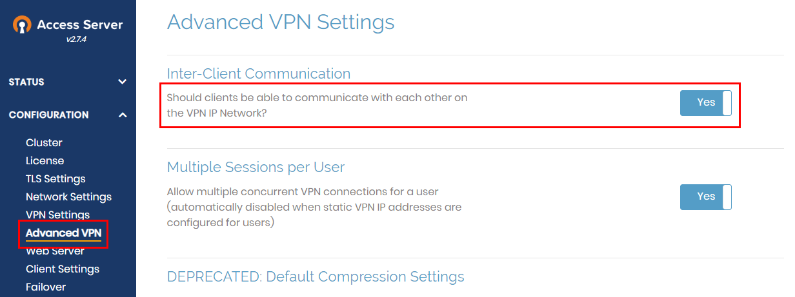값 변경후 해당 페이지 아래쪽 Save Settings를 클릭하여 저장합니다. 저장하면 위쪽에 Update Running Server하여 서버에 반영합니다.
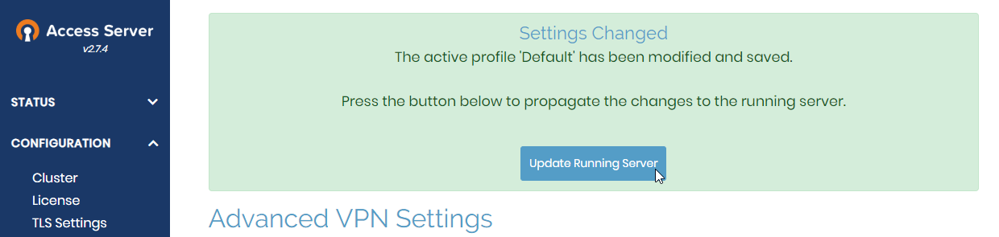
Step 3. PC에 OpenVPN 클라이언트 설치
클라이언트 Web-UI 접속
- http://{OpenVPN 서버 Public IP}:943
- Username: openvpn
- Password: 앞서 변경한 패스워드
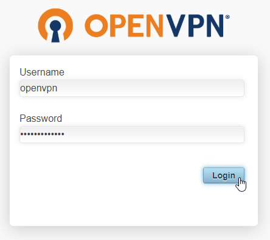
- http://{OpenVPN 서버 Public IP}:943
클라이언트 다운로드 후 설치합니다.
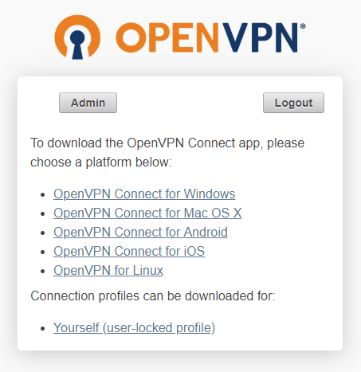OpenVPN 클라이언트를 실행하고 접속합니다.
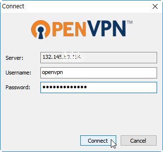접속이 성공하면 윈도우 오른쪽 아래 트레이에 접속했음이 표시됩니다.
Step 4. 접속 테스트
- OpenVPN 클라이언트로 VPN에 접속한 PC에서 SSH로 Private Subnet에 생성한 인스턴스의 Private IP로 바로 접속합니다. Private IP로 바로 접속되는 것을 확인할 수 있습니다.
> ssh -i privateKey opc@10.0.5.2
Warning: Permanently added '10.0.5.2' (RSA) to the list of known hosts.
X11 forwarding request failed on channel 0
Last login: Mon May 27 14:42:14 2019 from openvpn-server.sub05270458370.connectivityvcn.oraclevcn.com
[opc@instance-on-private ~]$참고 문서
Creating a Secure SSL VPN Connection Between Oracle Cloud Infrastructure and a Remote User
** 이 글은 개인으로서, 개인의 시간을 할애하여 작성된 글입니다. 글의 내용에 오류가 있을 수 있으며, 글 속의 의견은 개인적인 의견입니다. **